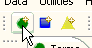
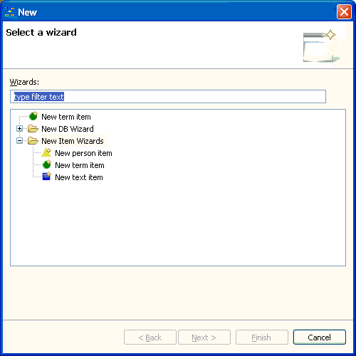
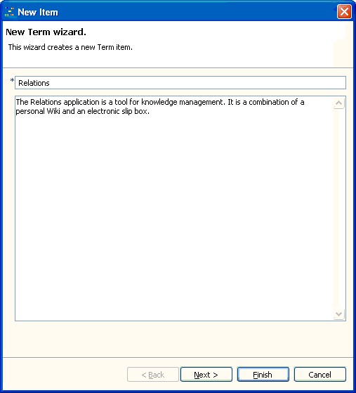

You can start the wizard to create a new item either by
clicking one of the new item
buttons in the toolbar or by starting the New...
wizard (e.g. using the short-cut
Ctrl+N).
 Action buttons to create new items in the application's toolbar.

The application's New... wizard.
Having chosen e.g. the wizard to create a new term item, a window shows up where you can enter the information you want to manage with the Relations application.

Having filled in the required information you can either
finish item creation by clicking the Finish
button or proceed to the next step and relate the newly created item
with
existing items.